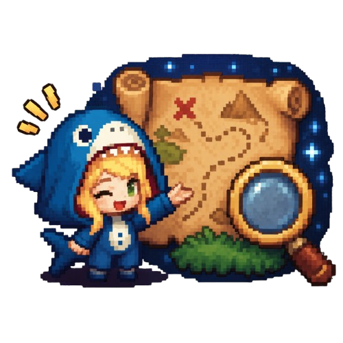
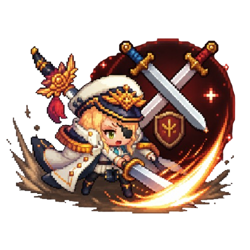
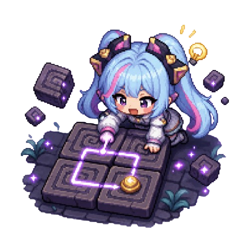
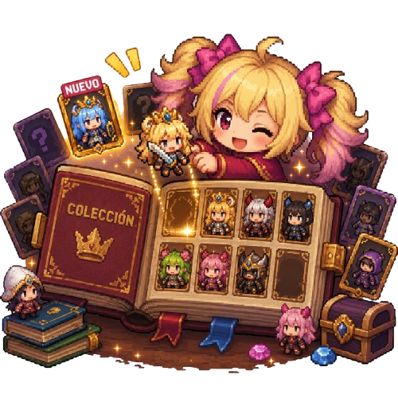
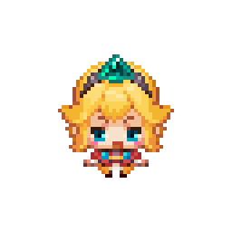

Historia
En Guardian Tales, el reino de Kanterbury está en peligro tras la invasión de fuerzas oscuras. Como guardián, deberás embarcarte en una aventura para salvar el mundo, descubrir la verdad detrás del caos y proteger a la princesa.

En Guardian Tales, el reino de Kanterbury está en peligro tras la invasión de fuerzas oscuras. Como guardián, deberás embarcarte en una aventura para salvar el mundo, descubrir la verdad detrás del caos y proteger a la princesa.
Guardian Tales es un videojuego RPG de acción y aventuras que combina combates dinámicos, exploración de mazmorras y desafiantes rompecabezas. Con un estilo retro inspirado en los clásicos, el juego ofrece una historia profunda y personajes llenos de personalidad.

Recorre distintos mundos llenos de secretos, misiones ocultas y desafíos.

Enfréntate a enemigos con habilidades únicas y estrategias dinámicas.

Resuelve acertijos para avanzar en la historia.

Desbloquea y mejora personajes con habilidades especiales.
El protagonista del juego, valiente y determinado.

Un personaje clave en la historia con un gran peso emocional.

Cada personaje tiene habilidades únicas que ayudan en combate.
¿Estás listo para convertirte en un héroe?